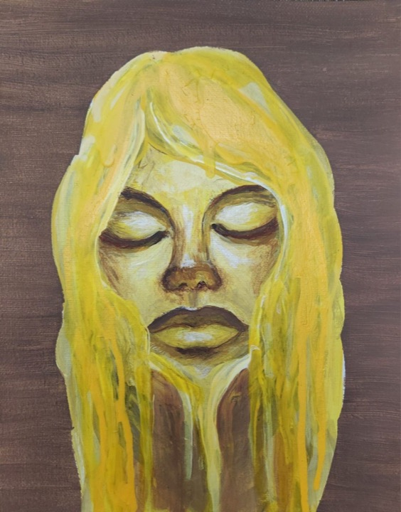

The Art of Appearing
Subject of inquiry: the culture of putting well-being on display and the loss of authentic identity.
We live in a society where we increasingly strive to seem rather than to be. Social media and beauty standards make us create idealized versions of ourselves, hiding imperfections and inner contradictions. First, we create a mask to please others. Then we learn to hide our feelings behind it, and one day we discover that we no longer know where the mask ends and the person begins.
The paintings explore different stages in the formation of a social mask: creating an attractive image, suppressing real emotions, and gradually losing one's identity in imposed ideals. But what price do we pay for wanting to meet others' expectations, for loneliness in society, and for social mechanisms in which displaying happiness crowds out the right to be vulnerable?

Behind the Frame
We choose a flattering angle, create an attractive image, and display success and flawlessness. But behind the aesthetics of the perfect photograph lies ordinary life, with its everyday details, imperfections, and vulnerability. Underwear on a clothesline shatters the illusion of glamour and brings the viewer back to reality. Why are we so afraid to show our real lives when those are the very lives we live?


The Obligation to Be Happy
Society demands that people constantly display happiness. A smile, beauty, and confidence become compulsory features of a public persona. Yet emotional exhaustion lies behind the attractive exterior. Dark marks under the eyes disrupt the carefully constructed image and reveal what people are expected to hide. When happiness becomes a social obligation, do we have the right to pain, weakness, and unhappiness?



Dissolution
Gold traditionally symbolizes perfection and success, but what is left if the golden mask begins to erase individual features? Artificial beauty becomes the means by which identity disappears. If we spend too long trying to become perfect, will we ever be able to recognize ourselves without the mask?